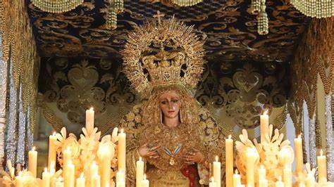
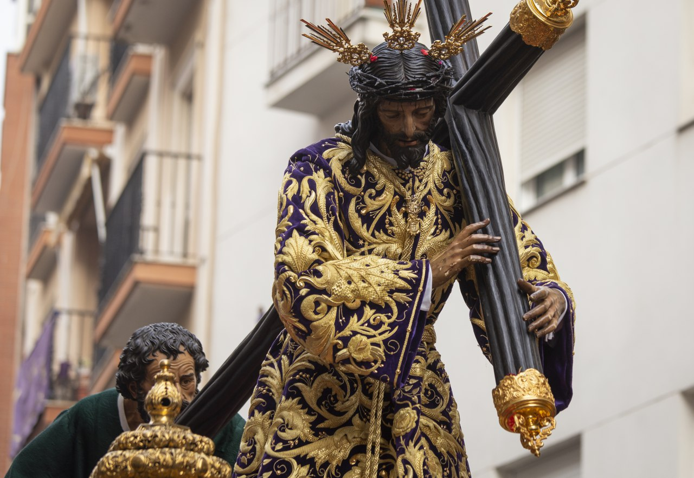

Historia
-Nuestra Hermandad fue fundada a fines del siglo XIX, entre los años 1893 y 1894, en la antigua Iglesia Conventual de San Francisco. El antecedente histórico más remoto en relación a la creación de la Hermandad se halla en la antigua asociación piadosa que rendía culto a San Telmo, Patrón de los Mareantes. No es de extrañar, por tanto, que sus fundadores y primeros hermanos fueran los marineros y pescadores que habitaban las calles del viejo barrio de San Francisco. Muy pronto, la Cofradía, cuyas primeras Reglas fueron aprobadas por el Arzobispo de Sevilla, Don Marcelo Spínola y Maestre, alcanzó grandes cotas de devoción entre los vecinos del barrio y su popularidad se extendió rápidamente por toda la ciudad, que profesaba un singular fervor hacia su Titular, la Santísima Virgen del Mayor Dolor, una imagen venerada en San Francisco desde el siglo XVII, cuya belleza y valía artística son constantemente ensalzadas en cuantos documentos conservados a Ella se refieren. Sin grandes avatares discurría la existencia de la Hermandad, hasta que en el año 1936, a comienzos de la Guerra Civil, sus imágenes y enseres fueron destruidos. De aquellos tiempos, se guarda especial memoria de la procesión del Miércoles Santo del año 1937, en la que una fotografía en blanco y negro de tamaño natural aparecía entronizada en el paso de palio, sustituyendo a la desaparecida talla de la Dolorosa. Pero no acaban aquí, ni con mucho, las vicisitudes padecidas por la Hermandad, que, sin haber aún recuperado el esplendor del que gozaba con anterioridad a la contienda, se ve obligada en 1963 a abandonar su sede canónica, la Iglesia de San Francisco. De este templo pasará a la Santa Iglesia Catedral, en la que permanecerá hasta 1978. El Miércoles Santo de ese mismo año la Cofradía habría de abandonar también el primer templo diocesano. Desahuciadas una y otra vez, las Sagradas Imágenes hallarían temporal hospedaje en una humilde vivienda, generosamente cedida al efecto, mientras que en el corazón del barrio de San Francisco comenzaba a levantarse, gracias a la devoción, cariño y fervor del Pueblo de Huelva, una pequeña Capilla donde la Cofradía hallaría definitivo asiento.En el año 1979 se bendice la nueva Capilla y con su llegada a ella la Hermandad conoce un periodo de esplendor y desarrollo nunca antes conocido, tanto es así que muy pronto el pequeño templo resulta incapaz para acoger la intensa vitalidad desplegada por la Cofradía. De este modo, en 1992 y nuevamente gracias a la generosidad de sus miembros, es bendecida por el Obispo de Huelva la nueva Iglesia de Santa María de la Esperanza, un templo capaz, con nobleza constructiva, que ha venido a beneficiar la imagen urbana de la ciudad y que dispone, además, de distintas dependencias auxiliares en las que se desarrollan continuamente actividades de apostolado y formación. Entre ambas fechas, concretamente en el año 1984, la Hermandad obtiene el carácter Sacramental, solicitado por la Junta de Gobierno de aquel entonces al amparo del que fuera nuestro Capellán y Director Espiritual, Reverendo Don Carlos Nuñez Vega, de feliz memoria para todos nosotros, con el único objetivo de que, desde la Hermandad, propietaria ya en aquel entonces de una Capilla, se intentase recuperar el culto Divino al Santísimo Sacramento, ya que la Parroquia estaba muy limitada por la ubicación temporal en la Capilla Conventual de las Hermanas de la Cruz, la cual no contaba con muchas posibilidades de propiciar el Culto Eucarístico.or primera vez en nuestra Ciudad, a petición, como no podía ser de otra manera, del Pueblo de Huelva, el 4 de junio de 1994, con motivo de la celebración del I Centenario Fundacional de la Hermandad, el Excelentísimo Ayuntamiento concede e impone la Medalla de Oro de la Ciudad a Nuestra Señora de la Esperanza, en un acontecimiento realmente vivido y participado por la Ciudad y sus onubenses. Tal es así, que, tras ello, y Coronada Canónicamente ya la primera Imagen Mariana de la Ciudad de Huelva, Nuestra Patrona, la Santísima Virgen de la Cinta, el Cabildo de Oficiales de Gobierno de la Hermandad acomete ilusionado y decidido la solicitud de la Coronación Canónica de Nuestra Señora de la Esperanza, petición ratificada por aclamación y entre vivas, vítores y aplausos, por un histórico Cabildo General de Hermanos celebrado el 11 de febrero del año 1997. En estos avatares, la Hermandad recibe una distinción altamente valorada por nosotros: la Cruz al Mérito Naval, concedida por Su Majestad el Rey Juan Carlos I a la Hermandad el 2 de enero de 1997, como reconocimiento a sus importantísimos vínculos con la Armada, que datan prácticamente desde los orígenes de la Cofradía, y que hoy se mantienen estrechos y absolutos, tal que la Marina Española está dignamente representada en todos los acontecimientos extraordinarios que la Hermandad celebra. El 18 de diciembre del mismo año, en la Función dedicada a Nuestra Señora de la Esperanza, el Reverendísimo Señor Obispo de la Diócesis, Don Ignacio Noguer Carmona, anuncia que acepta por primera vez en nuestra Diócesis la solicitud realizada por la Hermandad de Coronar Canónicamente a una Imagen de la Virgen Dolorosa. El miércoles Santo de 1999, el Señor Obispo, en su acostumbrada visita de la mañana, anuncia la fecha de la Coronación para el día 3 de junio de 2000. La Hermandad, que ya venía desarrollando actos y cultos preparatorios para este único acontecer, inicia un programa final para afrontar por último la ansiada Coronación de Nuestra Señora de la Esperanza. Entre ellos, cabe destacar de manera especial la visita de Sus Majestades los Reyes de España a la Exposición “Esplendores de Esperanza” y el regreso de la Virgen al Templo Catedralicio, veinte años después de haberlo abandonado, para la celebración del solemne triduo preparatorio de la Coronación.
El Santísimo Cristo de la Expiración
-Dramática representación de Cristo vivo en la cruz, en el momento de su expiración. Jesús eleva ligeramente la cabeza hacia la derecha, y dirige la mirada, ya carente de visión, al cielo. La corona de espinas es superpuesta y la larga cabellera, caída sobre ambos hombros, se organiza en suaves y ondulados mechones. La barba, también partida a dos aguas, recibe el mismo afán naturalista en su modelado. El semblante del Varón ofrece una expresión de angustia y abandono, con el entrecejo muy fruncido en forma de uve, los ojos de cristal, las pestañas pintadas en la madera, el perfil hebraico, y los labios amoratados y abiertos, mostrando claramente la lengua proyectada hacia delante y los dientes superiores tallados. El cuello aparece notablemente tensionado por la forzada posición de la testa. La talla presenta una anatomía esbelta, con el tórax hinchado por la expiración, las piernas rígidas, los brazos colgantes del travesaño y las manos abiertas, con los dedos levemente flexionados. El sudario es de tipo cordífero, dejando al descubierto ambos costados. Es un Crucificado de carnaciones morenas, con abundancia de heridas en su piel y regueros de sangre, éstos últimos tratados en relieve, destacando las desolladas heridas y la fractura del pómulo izquierdo. Se halla crucificado por tres clavos, montado el pie izquierdo sobre el derecho, a diferencia de lo habitual. La cruz es de sección cilíndrica y arbórea. Se trata de una interpretación muy libre del popular Cachorro, talla sevillana labrada por Francisco Antonio Ruiz Gijón (1687).
Nuestra Señora de la Esperanza Coronada
Antonio León Ortega, quien en los años 60 afinó el candelero de la imagen a la altura de la cintura. Talleres Nuestra Señora de la Almudena (Madrid), bajo la dirección de Raimundo Cruz Solís en 2012. La venerada Dolorosa mantiene la cabeza en posición frontal y dirige levemente la mirada hacia el suelo. Posee el recurso de la peluca de pelo natural con el fin de acentuar el naturalismo barroco. Su rostro es ovalado, mostrando la expresión apenada y concentrada en su aflicción y unas facciones nobles y aniñadas. El entrecejo se frunce, en señal de acusado dolor, y provoca el arqueamiento de las cejas, sutilmente policromadas. Los ojos son de cristal, presentando el iris pincelado en color miel, y las pestañas, postizas en el párpado superior y pintadas las inferiores. La nariz es recta y afilada; el mentón, prominente y redondeado, y la boca, entreabierta, permite ver la lengua y los dientes superiores tallados. El cuello aparece ligeramente anatomizado, con una papada incipiente que, al igual que las carnosas mejillas, denota carnosidad en el modelado. Las manos, de tipo tenedor, aparecen extendidas, portando en la izquierda un rosario y en la derecha un pañuelo y una réplica de las antiguas barcas de pescadores onubenses, cincelada en oro de ley por los Hermanos Delgado.
|
|
 |
|||
|
 |
|